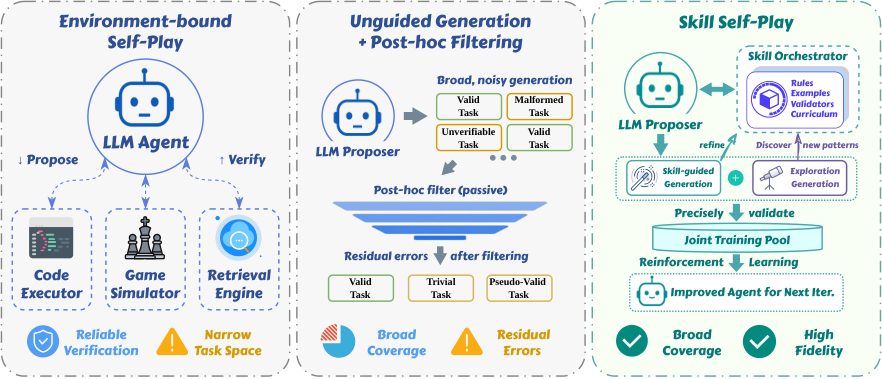
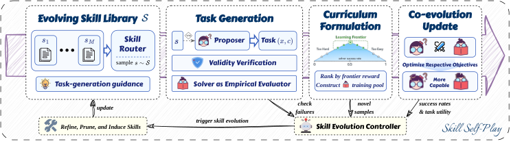
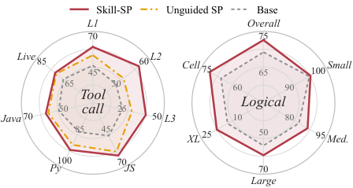
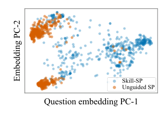
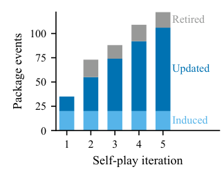
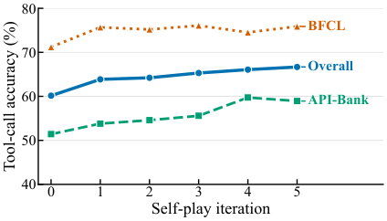
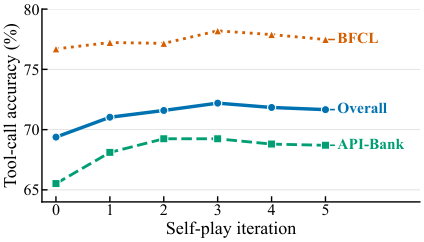
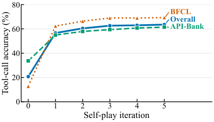
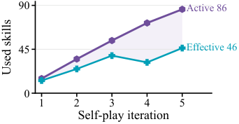
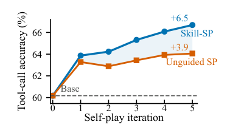

Self-Play是LLM自我进化的核心范式：模型自己生成训练数据，自己从中学到新能力。但Self-Play面临一个根本矛盾：要覆盖广泛的任务空间就需要多样化的生成策略，但多样性越高，验证数据质量的难度就越大。
Skill Self-Play（Skill-SP）提出了一个简洁的解决方案：用一个动态进化的技能库作为任务模式接口，让提议者（Proposer）基于技能库在求解者（Solver）的学习前沿生成高保真任务。在工具调用和逻辑推理两个领域，Skill-SP在多个骨干模型上全面超越现有Self-Play方法。
现有Self-Play方法可以归纳为两种范式：基于验证器的方法使用可靠的验证器（如编译器、执行器）但严重限制了任务空间；基于过滤器的方法扩大了覆盖范围但依赖被动的事后过滤，错误残差会降低数据质量。
Skill-SP的核心洞察是：将任务生成从「一次性过程」转变为「迭代技能进化过程」。通过一个主动的技能编排器（Skill Orchestrator），同时维护技能引导生成和开放探索两条流，实现既有广泛覆盖又有高保真的数据生成。

Skill-SP是一个训练时框架，将通用Self-Play转化为主动的课程构建过程。每个迭代轮次中，Skill-SP协调三个角色的联合优化：
提议者（Proposer Policy）：基于路由技能合成当前求解者学习前沿的有效任务。提议者通过技能引导生成和开放探索两条流生成候选任务，再由验证器过滤。
求解者（Solver Policy）：在验证后的课程数据上优化。求解者是实际被训练的LLM，其能力边界决定了提议者应该生成什么难度的任务。
技能控制器（Skill Controller）：管理一个动态进化的技能库。控制器从执行反馈中提炼技能，更新技能库，推动技能和求解者的持续共进化。
每个迭代轮次中，技能库中的技能被路由到提议者，提议者生成任务，验证器过滤，求解者训练，控制器从执行反馈中更新技能库。这个循环持续进行，技能和求解者共同进化。
技能库本身是动态的：新技能被加入，低效技能被淘汰。这种机制确保了任务生成始终聚焦于求解者当前的学习前沿，而非停留在已有能力的舒适区。

在工具调用（API-Bank、BFCL）和逻辑推理（ZebraLogic）两个领域，使用5个骨干模型（Qwen3-4B/8B、Ministral-3-8B/14B、Granite-4-1-3B）进行实验：
工具调用：Skill-SP在所有骨干模型上超越基线和现有Self-Play方法。Qwen3-4B在多个工具调用基准上达到或超越Qwen3-8B的水平。
逻辑推理：在ZebraLogic网格推理任务上，Skill-SP大幅超越基座模型和Unguided SP，展示了技能引导在复杂推理任务中的有效性。
技能进化分析：技能库在迭代过程中持续进化：旧技能被淘汰，新技能被加入，技能路由分布变得更加聚焦。有效的技能存活并繁衍，无效的技能被淘汰，构成一个自然的技能进化生态。



Skill-SP的扩展性体现在多个模型规模上：从3B到14B的参数范围，Skill-SP都带来了一致的提升。下图展示了5个骨干模型在迭代过程中的性能变化：



技能路由器的利用率分析显示，Skill-SP的技能库在实践中被高效利用：大多数技能都有对应的任务生成场景，不存在被完全闲置的技能。
数据效率方面，Skill-SP相比Unguided SP在更少的训练数据下达到更好的性能，说明技能引导生成的任务质量更高，验证成本更低。


参考：https://arxiv.org/abs/2607.22529